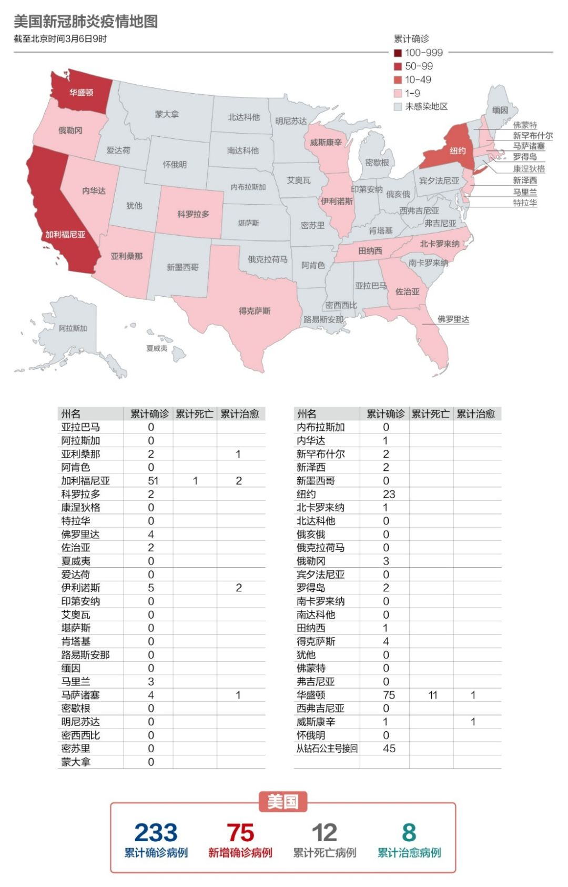
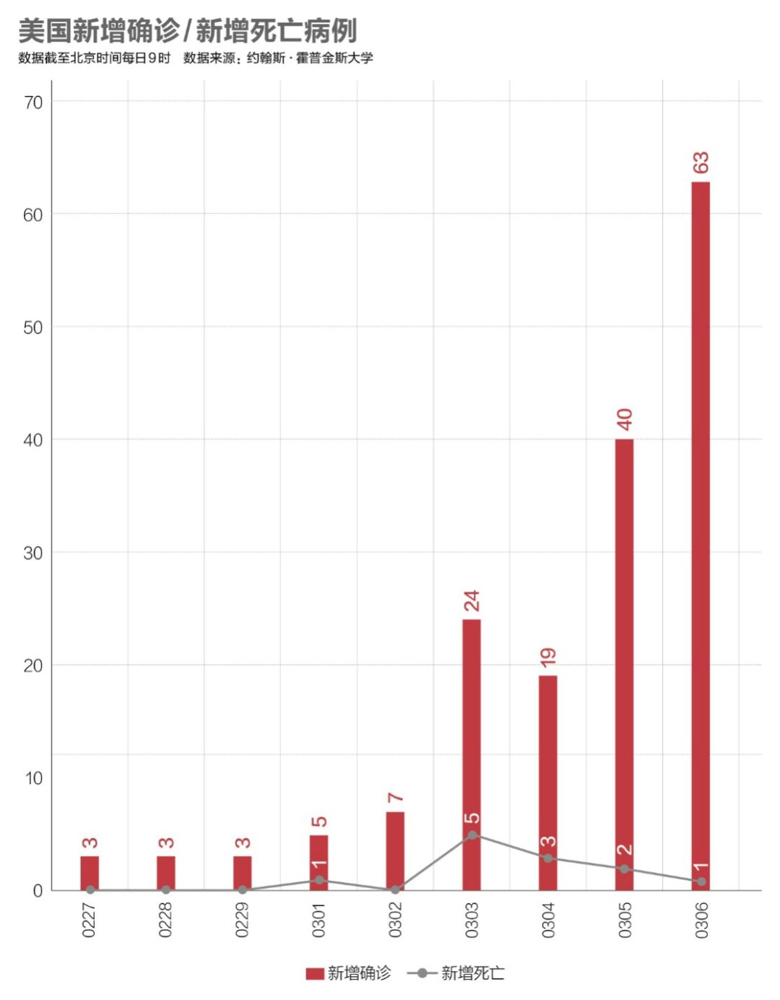
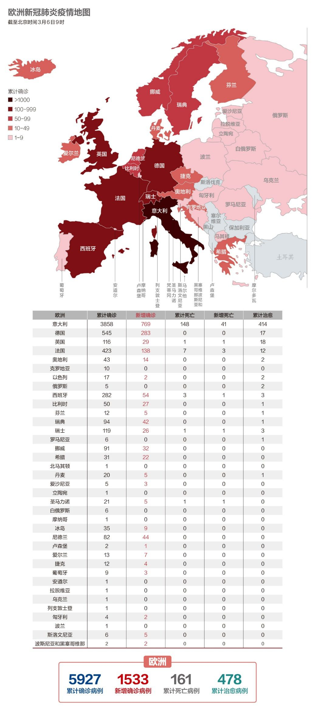
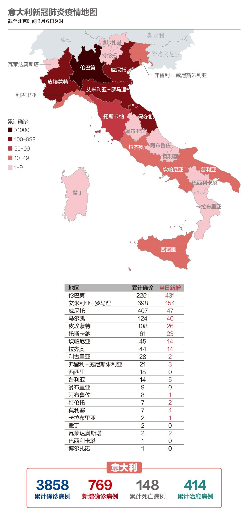

武汉中心医院又有医生殉职，韩国宣布进入战争状态，以及其他 25 条疫情新闻
原文链接 备份链接 根据丁香医生实时数据，截至 3 月 3 日 21:32 时，全国现存确诊病例 29930 例，累计确诊病例 80303 例，现存疑似病例 587 例。其中，重症病例 6806 例，死亡病例 2948 例， …

境外累计确诊病例即将超过2万。美国很可能有上千例潜在感染病例以及他们的密切接触者未能被及时发现和隔离，到目前为止，“我们看到的美国官方病例数字可能只是冰山一角”。
文 |《财经》数据研究员徐进 图 |《财经》视觉中心
编辑 | 郝洲
一、国内疫情防控进入决胜期，输入病例已全部隔离
今日国内简述：国内3月5日报告累计病例80552例，新增143例，低于意大利、伊朗、韩国、德国等国。新增病例126例来自武汉，广大非武汉地区本土病例仅1例，境外输入16例。这些输入病例均已在入境后第一时间隔离，在境内造成进一步传播扩散的机会很小。湖北非武汉地区首次实现零新增。广大非武汉地区在外防输入的同时，已对武汉疫情形成完全彻底的包围，国内抗疫已到决胜关头。考虑到国外疫情总体还处于流行期前期，较长时间、较大规模发展恐在所难免，按中央要求“加快建立同疫情防控相适应的经济社会运行秩序”，“力争全国经济社会发展早日全面步入正常轨道”已成为必然之选。
二、境外累计确诊很快将超过2万
图1

全球累计确诊病例即将超过10万。世卫专家组组长布鲁斯·艾尔沃德（Bruce Aylward）在率领考察队访问中国之后总结道，中国的抗疫方式可以被复制，但这需要速度、资金、想象力和政治勇气，迅速采取行动的国家仍可能控制住疫情。
图2

果不出小编预料，这张图今天真的扩容了。德国单日新增283，几乎是中国的两倍。目前看接下来将是法国，美国紧随其后。
三、美国距离疫情的“全貌”还有“很远的距离”
图3

今天把美国地图的位置提前了，想知道为什么吗？因为ta真的太太太太……重要了。美国副总统彭斯（Mike Pence）3月5日承认，没有足够的检测试剂盒来满足需求。美国国际开发总署（USAID）前署长康宁迪克（Jeremy Konyndyk）也对媒体说，美国只确认了该国冠状病毒病例总数的一小部分。他还说，由于检测的不足，我们离窥见美国病例总数的全貌还有很远的距离，到目前为止，我们看到的美国官方病例数字可能只是冰山一角。
图4

美国的新增病例数似有起跳迹象。最令人担忧的是其初期病死率竟高达5%-7%。对比中国湖北以外地区早期0.3%-0.6%的病死率，不能不产生怀疑。很难相信这是美国的医疗能力和水平低于中国湖北以外地区所致。因此很可能美国初期收治、确诊的主要是重症新冠病例。这意味着目前病死率的分母被大大低估。即便按中国湖北以外地区早期的0.6%推算，这个低估也可能在10倍左右（按0.3就是20倍）。那就是说还有上千例潜在感染病例以及他们的密切接触者未能被及时发现，他们正在不知不觉中以R0赋予的速度以指数函数的方式散播病毒。当然这还有待进一步观察，真心希望这一推断是错误的。但愿美国不至于犯这么低级的错误。好消息是美国作为全球医疗科技和公共卫生服务水平的领先者，各种资源正在被积极调动起来，重视程度也在不断提高。
四、韩国开始限购口罩了
图5

韩国累计确诊突破6000，依然是中国境外疫情最严重的国家。韩国政府为建立一个公平的口罩销售系统，宣布自3月6日开始，每名顾客每周只能在药房买2个口罩。根据顾客的年份，奇数年份出生者只能在奇数日期买口罩；偶数年份出生者则在偶数日期买。
五、疫情给欧洲经济带来伤害
图6

自意大利之后，德国、法国的单日新增也首次破百；英国出现首例死亡，确诊总数过百。疫情在欧洲已彻底暴发，正给欧洲带来巨大的经济伤害。旅游趋势分析公司ForwardKeys最新报告显示，截至2月最后一周，新冠炎疫情已对意大利和欧洲的入境旅客数量产生巨大冲击，大批预定取消，并且从全球其他洲前往欧洲的新增机票预定也断崖式下跌。
图7

意大利依然是欧洲疫情最严重的国家。意大利皮亚琴察市女市长巴比里（Patrizia Barbieri）也被确诊感染新冠，目前居家隔离。意国家高等卫生研究院正研判扩大红区范围的可行性，可以理解为意大利有可能封闭隔离更多的城镇。
【特别说明：以上统计，2月28日前为世卫组织官方统计数据，数据截止时间为北京时间每日17时；从2月28日开始，数据由《财经》根据公开资料统计，截止时间为北京时间每日9时】
六、全球疫情数字速览：
1、【亚太经济体损失2110亿美元】评级机构标普表示，新型冠状病毒疫情的快速蔓延可能会使亚太地区经济体损失2,110亿美元。标普预计2020年澳大利亚经济增长将从2019年的2.2%大幅放缓至1.2%。日本GDP增长将因疫情减少0.5个百分点，韩国GDP增长将减少1个百分点。
2、【航空业损失1130亿美元】国际航空运输协会（IATA）3月5日在最新发布的新冠肺炎疫情对全球航空运输业的财务影响预测中指出， 2020年全球客运业务的收入损失将介于630亿美元（数据基于3月2日，新冠肺炎确诊数超过100例的国家）到1,130亿美元（疫情传播范围更广的情况下）之间。
3、【罚款5000万韩元】韩国保健福祉部3月6日表示，韩国从即日颁布实施新修订的《传染病预防管理法实施条例》。根据修订令，因甲类传染病流行（包括COVID-19）导致预防、防疫、治疗物资价格飙升或紧缺，影响国民健康安全时，政府有权禁止卫生口罩、洗手液、防护装备出口或运往国外，违者将处以5年以下有期徒刑或5000万韩元（约合人民币29万元）以下罚款。
4、【最高40%人口感染】伊朗卫生部于3月5日宣布启动国家动员计划。该计划将先在疫情严重地区开始实施，接下来几天内扩展至其他地区。该计划将包括伊朗全部城市、郊区和乡村的约1.7万个卫生中心以及9,000个医疗和临床中心。此外，伊朗传染病专家、国家流感委员会委员马苏德•马达尼预计，“新冠肺炎病毒正在伊朗蔓延，预计3月底德黑兰将有30%至40%的人口受到感染。”
小结：美国很可能有上千例潜在感染病例以及他们的密切接触者未能被及时发现和隔离，到目前为止，“我们看到的美国官方病例数字可能只是冰山一角”。新冠疫情的暴发已经给全球经济造成了实质性伤害。


▲点击图片查看更多疫情报道
责编 | 黄端 duanhuang@caijing.com.cn
本文为《财经》杂志原创文章，未经授权不得转载或建立镜像。如需转载，请在文末留言申请并获取授权。
原文链接 备份链接 根据丁香医生实时数据，截至 3 月 3 日 21:32 时，全国现存确诊病例 29930 例，累计确诊病例 80303 例，现存疑似病例 587 例。其中，重症病例 6806 例，死亡病例 2948 例， …
原文链接 备份链接 目前包括中国大陆在内，全球已经有41个国家和地区出现了疫情，其中，韩国是中国大陆之外疫情蔓延最快的国家。 尽管如此，世卫组织不希望在“没有谨慎和清晰地分析事实情况之前”仓促宣布疫情为全球“大流行病” 文 |《财经》特派 …
原文链接 备份链接 随着新冠肺炎疫情在全球范围内扩散，“口罩荒”现象明显增多，不少国家开始禁止口罩出口。 全球多地口罩告急 韩国买口罩实行单双号 随着新冠肺炎疫情加剧，韩国市场上“口罩荒”日益严重。韩国将实施口罩限购措施：按照出生年份的奇 …
原文链接 备份链接 随着新冠肺炎疫情的蔓延，在过去的一天，韩国、意大利、伊朗等多国新增确诊数继续上升，中国以外累计确诊病例超过15000例。 世卫组织：部分国家对新冠肺炎准备不足 当地时间3月5日，世卫组织在日内瓦召开新冠肺炎疫情例行发 …
原文链接 备份链接 据美国《纽约时报》汇总各州公共卫生部门公布的新冠肺炎确诊病例，截至当地时间5日下午，全美已有163例确诊病例，分布在18个州。华盛顿州公共卫生部门5日公布了一例死亡病例，使得全美死亡病例达到了12例。 数据显示，美国 …